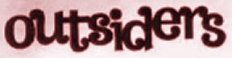

Links
Outsiders related sites:
Record Stores:
-
Rockhouse,
Holland. They carry Outsiders reissues.
-
Geen Idee, Holland.
They carry Outsiders reissues.
-
Search the
GEMM
marketplace for stores which carry Outsiders records
Miscellaneous:
-
Hitomi knows everything about Japanese 60's garage. Visit her
Cutie Morning Moon:
Trans-World '60s Garage Punk now!
-
The Garage
THE Garage Resources Links Page.
-
Favoriet.nl
A very nice sixties music links page.
-
Teen Scene
Teen Scene is a popular fanzine, available (for free) by
ftp,
focusing mainly on punk rock and modern garage. Very nicely written and involving
thanks to a "first-person" approach, it is also available in its original
paper incarnation. Further information from Blair Buscareno at
blairb1@idt.net.
-
Ugly Things
Home of the the ultimate rock'n'roll magazine.